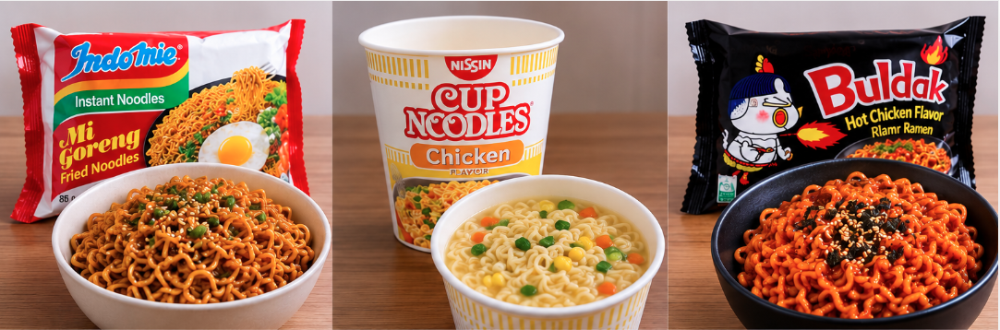
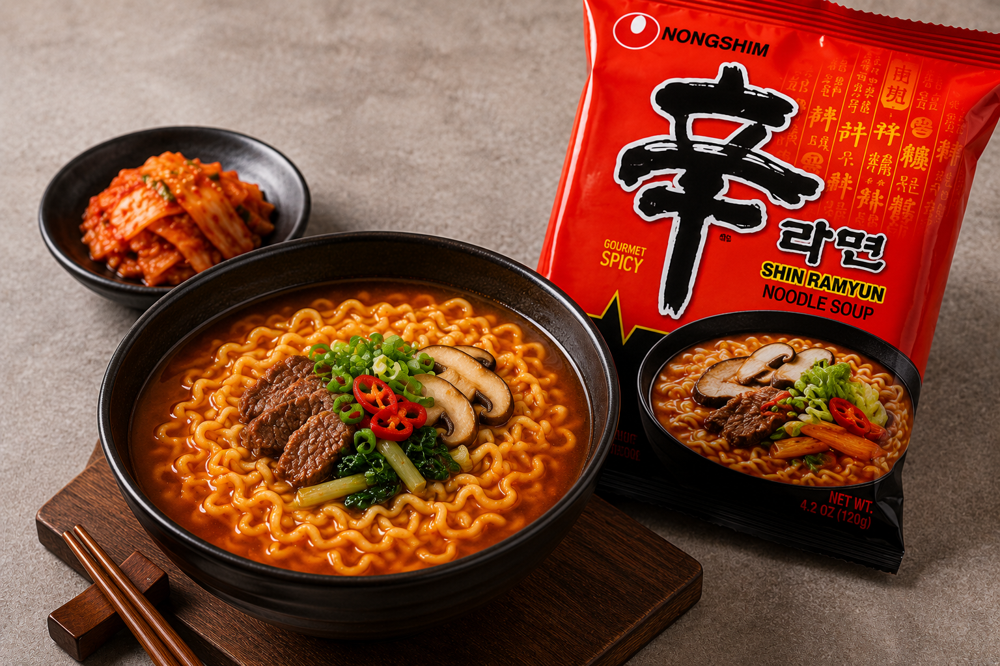
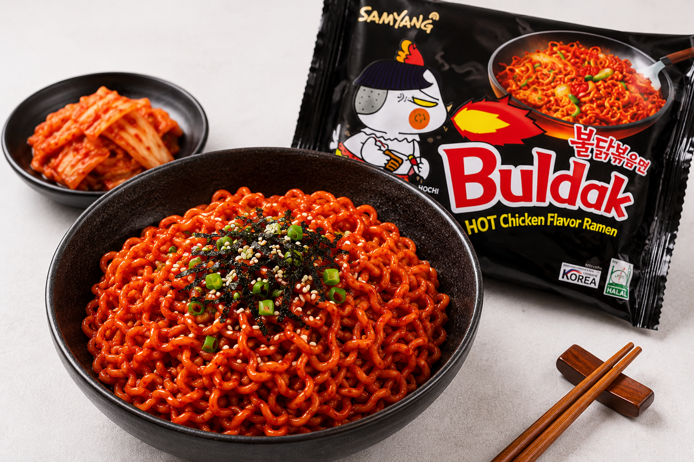
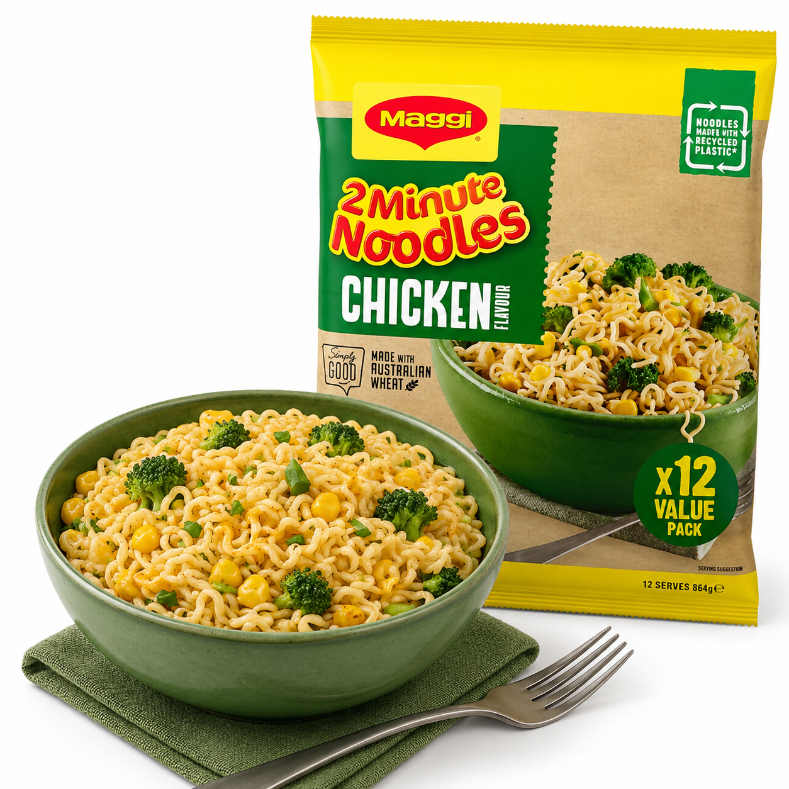
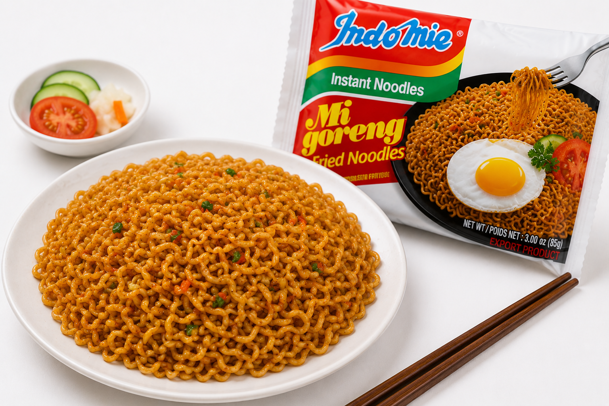
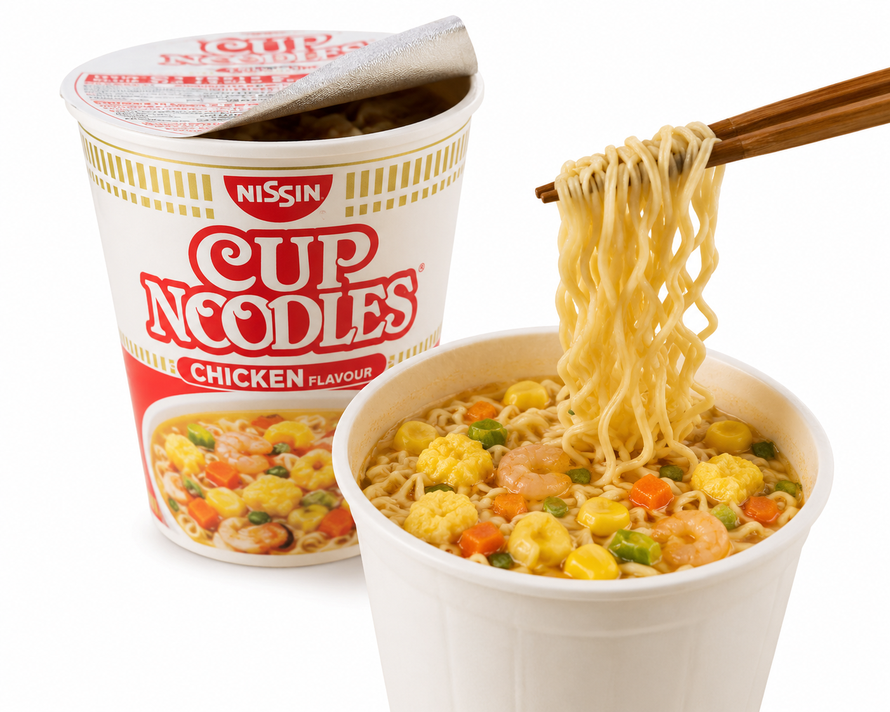

ShinRamen is a popular Korean instant noodle that is known for its spicy and rich flavour. It is quick and easy to cook, making it a great meal when you are short on time. What makes Shin Ramyun unique is its chewy noodles and bold, spicy broth, which gives it a stronger flavour than many other instant noodles. Many people also add ingredients like eggs, vegetables, cheese, or meat to make it an even bigger and tastier meal.


Buldak noodles are a popular instant noodle brand from South Korea made by Samyang Foods. The word 'Buldak' means "fire chicken," which is from their very spicy flavour. They are different from regular instant noodles because they are coated in a thick, spicy sauce instead of having soup. Buldak noodles became popular around the world through the "Fire Noodle Challenge" on social media. Today, they come in many flavours, including Carbonara, Cheese, and 2× Spicy, and are enjoyed by people who like spicy food.
2MinNoodles are a quick and easy meal that many people enjoy. They only take about two minutes to cook, so they are great when you are busy or hungry. They come in many different flavours, such as chicken, beef, and vegetable. You just boil the noodles, add the flavour packet, and they are ready to eat. Some people also add vegetables, eggs, or meat to make them healthier and more filling.


MiGoreng is a popular instant noodle meal that is quick and easy to make. It has a sweet, savoury, and slightly spicy flavour that many people enjoy. What makes Mi Goreng unique is that it is mixed with different sauce and seasoning packets after the noodles are cooked, instead of being served in a soup. This gives the noodles a rich flavour and a dry, stir-fried style. Mi Goreng can be eaten on its own or with a fried egg, vegetables, or chicken for a bigger meal.
Nissin Cup Noodles are a popular instant noodle meal that is quick and easy to prepare. They come in a cup, so you only need to add hot water and wait a few minutes before eating. What makes Nissin Cup Noodles unique is that they are made to be cooked and eaten from the same cup, making them very convenient with little clean-up. They come in many different flavours and are a popular choice for a fast meal at home, school, or work.
